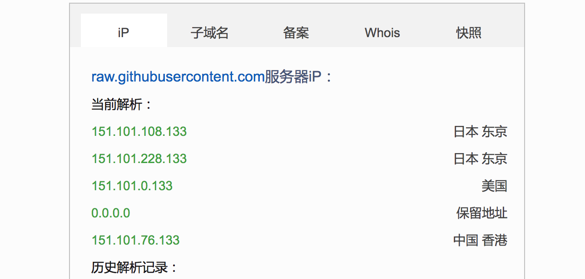
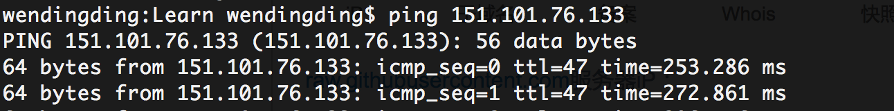

疑难杂症-raw.githubusercontent.com访问错误
Feb 12, 2019 ✧ 字数统计:367(字) ♨︎ 阅读时长:1(分钟)
我自己在写博客的时候，需要在博客中间插入很多的图片来解释和说明文章，为了方便所以我以前是在 github账户下面新创建了一个 source 仓库专门用来保存图片等静态资源的，当图片等文件上传到 github 仓库后会获得一个 URL 地址，正常我在博客中只需要通过 image 标签来引入这个地址就可以了。
前段时间在访问自己博客的时候，突然发现很多图片资源都访问不了，检查下原因应该是 raw.githubusercontent.com 被 GFW 特殊照顾了，下面给出恢复访问的解决方案。
第一步 查询该网站的 IP 地址
打开查询网页面,在该页面的查询搜索框中输入 raw.githubusercontent.com , 或者直接点击我跳转
你将会得到下面的 IP 地址结果。
查询到 IP 地址后，可以ping不同IP的延时以选择最佳IP地址。
第二步 修改电脑的 host
我用的是 Mac 电脑，所以直接在终端中输入sudo vi /etc/hosts命令使用 vim 工具来打开。
在该文件中新添加 对应的 IP 地址即可。